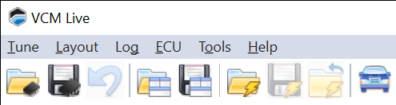

MENU BAR🔗
VCM Live's menu bar includes the following menus:

Tune Menu🔗
Use the menu open, close, and save tune files you wish to edit.
-
Open Tune - Opens an existing tune file.
-
Save Tune - Saves the open tune file.
-
Save Tune As - Saves the open tune file to a different location or filename.
-
Upgrade Tune - Select this option to compare the current tune to a saved tune file and (if desired) select parameter settings you wish to import into the current tune. See Upgrading and Comparing Tunes.
-
Tune Info - Displays a window containing information about the currently open tune file.
-
Setup Wizard - Opens the Setup Wizard window. See Running the Setup Wizard.
Layout Menu🔗
The options in this menu allow you to load and save custom screen layouts. See Layouts for more information.
-
New Layout - Closes the existing layout (if any) and displays a new blank layout.
-
Open Layout - Open a layout that you have saved previously.
-
Save Layouts - Saves the current arrangement of tabs and subwindows to a file.
-
Save Layouts As - Save the current layout to a different file.
-
Default Layouts - Displays several pre-defined layouts, which can be used as is or serve as the basis for designing your own. Select a layout from the list to load it.
-
Import Layout - Select this option to add one or more tabs from a saved layout to your current layout.
-
Add Control - Select this item to add a new graph or chart to the current layout.
-
Lock Layout - Select this option to lock the current layout so that it can no longer be modified.
-
Scale Layout with Window Size - Select this item to turn layout scaling on and off. If a check appears to the left of this item, the subwindows in the layout will be resized when you change the size of the window that contains VCM Live. When no check appears, the subwindows will remain a constant size.
-
User Alerts - Select this item to set up visible and/or audible alerts when particular measurements reach the values you specify. See User Alerts.
-
Virtual Measurements - Select this option to open the Virtual Measurements window. This window allows you to define custom measurements by combining one or more existing measurements with mathematical expressions. See Virtual Measurements.
Log Menu🔗
The Log File menu allows you to open, close, and save files containing the log data you have recorded.
-
Open Log - Open a saved log file.
-
Close Log - Close the currently-open log file.
-
Save Log - Save the data that VCM Live has recorded to a log file.
-
Save Log As - Save the data that VCM Live has recorded to a different location or file name.
-
Export Log to .csv - Export recorded log data to a format that can be imported easily into many spreadsheets and data processing applications (.csv file).
ECU Menu🔗
-
Connect to ECU - Opens a data connection to the ECU.
-
Disconnect from ECU - Closes the data connection to the ECU.
-
Read - If there is an ECU connected to your computer, select this option to read the ECU's current tune.
-
Write - If there is an ECU connected to your computer and you have a tune file appropriate for that vehicle open, select this option to write the tune in the open file to the ECU.
-
DTC'S - Opens the Diagnostics and Information window, which is used to read and clear DTC's.
-
Live Tuning Enabled - When connected to an ECU, selecting this item turns live tuning on and off. When ON, the majority of changes made to the ECU will take effect immediately. When OFF, all changes require flashing an updated tune file to the ECU.
-
Crank Cam Offset Wizard - Use this option to automatically determine the correct crank cam offset by measuring the response of a running engine. See Crank Cam Offset Wizard for more information.
-
Standalone Logging Config - Select this item to tell the ECU to automatically record certain measurements, even when it's not connected to VCM Live. See Standalone Logging Configuration.
-
CAN Config - Select this item to configure messages sent and received on the CAN bus. See CAN Bus Configuration.
-
Automatic Throttle Calibration - Select this item to start the automatic throttle calibration wizard, which can be used to calibrate both electronic (fly by wire) and manual (fly by cable) throttles. It can also calibrate the accelerator pedal. See Automatic Throttle Calibration.
-
Trigger Scope - Select this item to examine cam and crank data at a higher sampling rate than would be possible in a normal time graph. See Trigger Scope.
Tools Menu🔗
- Options - Opens the Options window, which contains user preference settings for the VCM Live application. See Options for more information.
Help Menu🔗
- Help - Opens this help system.
- About - Displays the version of the VCM Live you are using and lists the keyboard shortcuts that can be used in VCM Live. See The About Window.